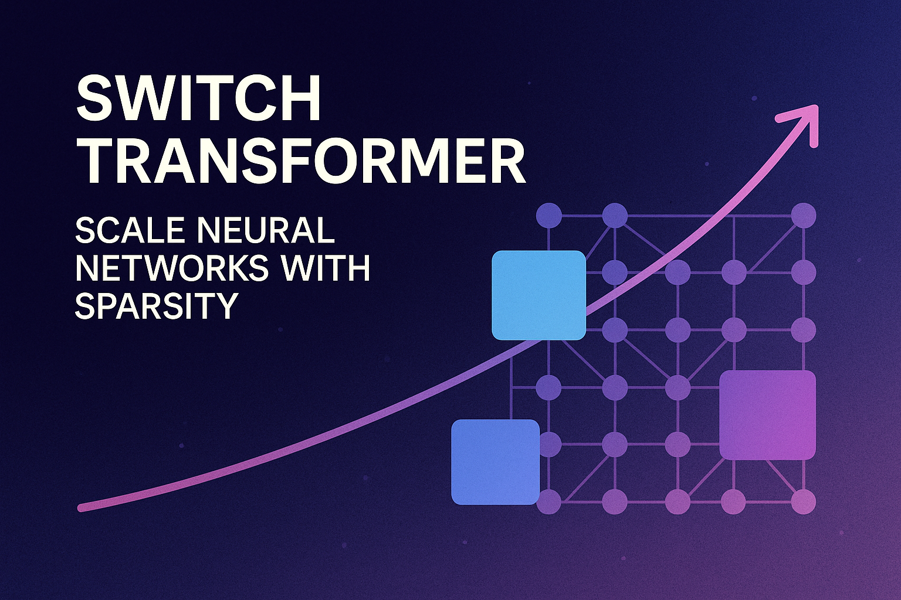
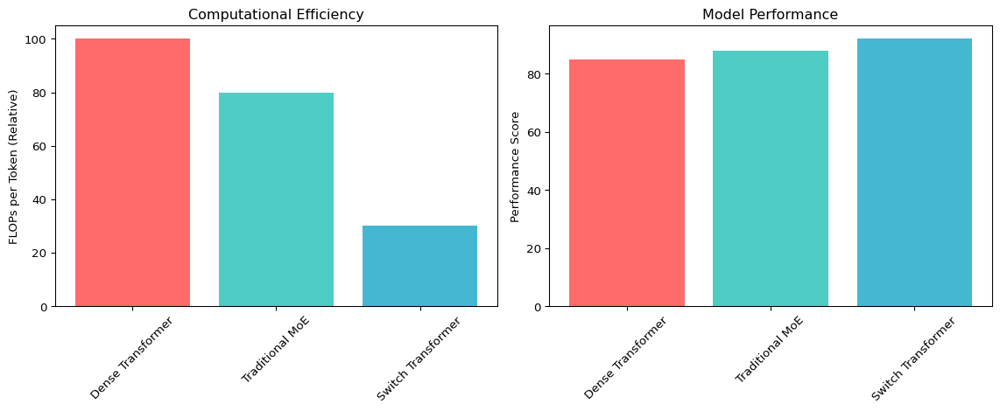

# Switch Transformer routing function
def switch_routing(x, experts, gating_function):
"""
y = Switch(x) = Σ(i=1 to N) G(x)_i * E_i(x)
Where:
- x is the input token
- N is the number of experts
- G(x)_i is the gating function output for expert i
- E_i(x) is the output of expert i
"""
N = len(experts)
gating_weights = gating_function(x)
# Key innovation: sparse output where only one expert gets non-zero weight
selected_expert = argmax(gating_weights)
return experts[selected_expert](x)Switch Transformer: Scaling Neural Networks with Sparsity

Introduction
The Switch Transformer represents a groundbreaking advancement in neural network architecture, introduced by Google Research in 2021. This innovative model addresses one of the most pressing challenges in deep learning: how to scale neural networks to unprecedented sizes while maintaining computational efficiency. By leveraging the concept of sparsity and expert routing, Switch Transformer achieves remarkable performance improvements with fewer computational resources per token.
NoteKey Insight
Not all parts of a neural network need to be active for every input. Switch Transformer employs a sparse approach where only a subset of the model’s parameters are activated for each token.
The key insight behind Switch Transformer is that not all parts of a neural network need to be active for every input. Instead of using dense computations across the entire network, Switch Transformer employs a sparse approach where only a subset of the model’s parameters are activated for each token, dramatically improving efficiency while scaling to trillions of parameters.
Background and Motivation
The Scaling Challenge
Traditional transformer models face a fundamental trade-off between model capacity and computational efficiency. While larger models generally perform better, they require exponentially more computational resources. For instance, GPT-3 with 175 billion parameters requires enormous computational power for both training and inference, making it accessible only to organizations with substantial resources.
Mixture of Experts (MoE) Foundation
Switch Transformer builds upon the Mixture of Experts (MoE) paradigm, which has been explored in various forms since the 1990s. The core idea is to have multiple specialized “expert” networks, with a gating mechanism that determines which experts should process each input. This approach allows for increased model capacity without proportionally increasing computational cost.
WarningPrevious MoE Challenges
- Complex routing algorithms
- Training instability
- Load balancing issues
- Difficulty in scaling to very large numbers of experts
Switch Transformer addresses these limitations through elegant simplifications and innovations.
Architecture Overview
Core Components
The Switch Transformer architecture consists of several key components that work together to achieve efficient sparse computation:
Switch Layer
The fundamental building block of Switch Transformer is the Switch Layer, which replaces the traditional feed-forward network (FFN) in transformer blocks. Each Switch Layer contains multiple expert networks, typically implemented as separate FFN modules.
Switch Routing
The routing mechanism is dramatically simplified compared to previous MoE approaches. Instead of complex routing algorithms, Switch Transformer uses a straightforward approach:
- Each token is routed to exactly one expert
- The routing decision is made by a learned gating function
- This “hard routing” approach eliminates the need for complex load balancing
Expert Networks
Expert networks are individual feed-forward networks that specialize in processing specific types of inputs. Each expert has the same architecture as a standard transformer FFN but develops specialized representations during training.
Mathematical Foundation
The Switch Transformer routing can be expressed mathematically as:
The key innovation is that G(x) produces a sparse output where only one expert receives a non-zero weight, simplifying computation significantly.
Key Innovations
Simplified Routing Algorithm
Switch Transformer introduces a dramatically simplified routing mechanism:
- Complex gating functions
- Multiple experts per token
- Soft routing with weighted combinations
- Difficult load balancing
- Single expert per token
- Hard routing decisions
- Simple argmax selection
- Natural load distribution
This simplification reduces computational overhead while maintaining the benefits of expert specialization.
Expert Capacity and Load Balancing
One of the most innovative aspects of Switch Transformer is its approach to load balancing:
Capacity Factor
The model uses a capacity factor to determine how many tokens each expert can process. This is calculated as:
def calculate_expert_capacity(tokens_per_batch, num_experts, capacity_factor):
"""
Expert Capacity = (tokens_per_batch / num_experts) * capacity_factor
"""
return (tokens_per_batch / num_experts) * capacity_factorAuxiliary Loss
To encourage balanced routing, Switch Transformer employs an auxiliary loss function that penalizes uneven distribution of tokens across experts:
def auxiliary_loss(expert_frequencies, expert_probabilities, alpha=0.01):
"""
L_aux = α * Σ(i=1 to N) f_i * P_i
Where f_i is the fraction of tokens routed to expert i,
and P_i is the probability mass for expert i.
"""
return alpha * sum(f * p for f, p in zip(expert_frequencies, expert_probabilities))Selective Precision Training
Switch Transformer introduces selective precision training, where different components use different numerical precisions:
- Router computations use float32 for stability
- Expert computations can use lower precision (bfloat16)
- This approach balances training stability with computational efficiency
Technical Implementation Details
Training Considerations
Training Switch Transformer models requires careful consideration of several factors:
TipTraining Best Practices
- Initialization Strategy
- Experts are initialized with small random weights
- Router weights are initialized to produce uniform distributions
- Proper initialization is crucial for achieving expert specialization
- Regularization Techniques
- Dropout is applied within expert networks
- Auxiliary loss provides implicit regularization
- Expert dropout can be used to improve robustness
- Distributed Training
- Experts can be distributed across different machines
- All-to-all communication patterns are used for token routing
- Careful attention to communication efficiency is required
Inference Optimization
Inference with Switch Transformer models involves several optimizations:
Expert Caching
- Frequently used experts can be cached in fast memory
- Dynamic expert loading based on input characteristics
- Predictive expert prefetching
Batching Strategies
- Tokens routed to the same expert are batched together
- Dynamic batching based on routing decisions
- Memory-efficient expert execution
Performance and Scalability
Empirical Results
Switch Transformer has demonstrated impressive performance across various benchmarks:
Code
import matplotlib.pyplot as plt
import numpy as np
# Sample data for illustration
models = ['Dense Transformer', 'Traditional MoE', 'Switch Transformer']
flops_per_token = [100, 80, 30]
performance_score = [85, 88, 92]
fig, (ax1, ax2) = plt.subplots(1, 2, figsize=(12, 5))
# FLOPs comparison
ax1.bar(models, flops_per_token, color=['#ff6b6b', '#4ecdc4', '#45b7d1'])
ax1.set_ylabel('FLOPs per Token (Relative)')
ax1.set_title('Computational Efficiency')
ax1.tick_params(axis='x', rotation=45)
# Performance comparison
ax2.bar(models, performance_score, color=['#ff6b6b', '#4ecdc4', '#45b7d1'])
ax2.set_ylabel('Performance Score')
ax2.set_title('Model Performance')
ax2.tick_params(axis='x', rotation=45)
plt.tight_layout()
plt.show()
Language Modeling
- Achieved state-of-the-art results on language modeling tasks
- Significant improvements in perplexity with fewer FLOPs
- Effective scaling to trillion-parameter models
Multi-task Learning
- Strong performance across diverse NLP tasks
- Effective knowledge transfer between tasks
- Improved sample efficiency
Scaling Properties
The scaling properties of Switch Transformer are particularly noteworthy:
- Linear increase in parameters with number of experts
- Sublinear increase in computational cost
- Maintained quality with increased sparsity
- Experts develop clear specializations during training
- Linguistic experts emerge (syntax, semantics, etc.)
- Domain-specific experts for specialized tasks
- Significant reduction in FLOPs per token
- Improved throughput for large-scale applications
- Better resource utilization in distributed settings
Advantages and Limitations
Advantages
- Computational Efficiency: Dramatically reduced computational cost per token while maintaining large model capacity
- Scalability: Ability to scale to trillions of parameters without proportional increase in computation
- Specialization: Experts develop clear specializations, leading to better performance on diverse tasks
- Flexibility: Can be applied to various transformer architectures and tasks
- Resource Optimization: Better utilization of computational resources in distributed settings
Limitations
CautionCurrent Limitations
- Memory Requirements: Despite computational efficiency, large models still require substantial memory
- Communication Overhead: Distributed training requires careful optimization of communication patterns
- Load Balancing: Achieving perfect load balance across experts remains challenging
- Complexity: Implementation complexity is higher than standard transformers
- Hardware Dependencies: Optimal performance requires specialized hardware configurations
Applications and Use Cases
Natural Language Processing
Switch Transformer has shown particular strength in various NLP applications:
Language Modeling
- Large-scale language model pretraining
- Improved efficiency for autoregressive generation
- Better handling of diverse linguistic phenomena
Machine Translation
- Multilingual translation systems
- Language-specific expert development
- Improved handling of low-resource languages
Text Classification
- Multi-domain classification tasks
- Efficient fine-tuning for specific domains
- Robust performance across diverse text types
Beyond NLP
While primarily developed for NLP, Switch Transformer principles can be applied to other domains:
Computer Vision
- Vision transformers with expert routing
- Specialized processing for different visual patterns
- Efficient scaling for large vision models
Multimodal Learning
- Cross-modal expert specialization
- Efficient processing of diverse input modalities
- Improved scaling for multimodal models
Implementation Considerations
Framework Support
Switch Transformer implementations are available in several frameworks:
# Example implementation structure in PyTorch
import torch
import torch.nn as nn
class SwitchTransformerLayer(nn.Module):
def __init__(self, d_model, num_experts, expert_capacity):
super().__init__()
self.d_model = d_model
self.num_experts = num_experts
self.expert_capacity = expert_capacity
# Router network
self.router = nn.Linear(d_model, num_experts)
# Expert networks
self.experts = nn.ModuleList([
nn.Sequential(
nn.Linear(d_model, d_model * 4),
nn.ReLU(),
nn.Linear(d_model * 4, d_model)
) for _ in range(num_experts)
])
def forward(self, x):
# Router decision
router_logits = self.router(x)
expert_weights = torch.softmax(router_logits, dim=-1)
# Select expert (hard routing)
selected_expert = torch.argmax(expert_weights, dim=-1)
# Apply selected expert
batch_size, seq_len = x.shape[:2]
output = torch.zeros_like(x)
for i in range(self.num_experts):
mask = (selected_expert == i)
if mask.any():
expert_input = x[mask]
expert_output = self.experts[i](expert_input)
output[mask] = expert_output
return outputJAX/Flax
- Original implementation from Google Research
- Optimized for TPU training
- Comprehensive distributed training support
PyTorch
- Community implementations available
- Integration with Hugging Face Transformers
- Support for GPU training
TensorFlow
- TensorFlow Model Garden implementations
- Integration with TensorFlow Serving
- Support for various deployment scenarios
Deployment Strategies
Deploying Switch Transformer models requires careful consideration:
Inference Optimization
- Expert pruning for reduced model size
- Dynamic expert loading
- Efficient batching strategies
Serving Infrastructure
- Distributed serving across multiple machines
- Load balancing for expert utilization
- Caching strategies for frequently used experts
Future Directions and Research
Ongoing Research Areas
Several areas of active research are extending Switch Transformer capabilities:
Improved Routing Algorithms
- More sophisticated routing mechanisms
- Adaptive routing based on input characteristics
- Learned routing policies
Dynamic Expert Creation
- Automatic expert creation and pruning
- Adaptive model capacity based on task requirements
- Continual learning with expert specialization
Cross-domain Applications
- Extension to other domains beyond NLP
- Universal expert architectures
- Multi-task expert sharing
Emerging Variants
Several variants and extensions of Switch Transformer are being explored:
- Improved routing mechanisms
- Better scaling properties
- Enhanced expert specialization
- Integration with Google’s Pathways system
- Improved distributed training
- Better hardware utilization
- Architectural improvements
- Better training stability
- Enhanced expert utilization
Conclusion
Switch Transformer represents a significant advancement in neural network architecture, demonstrating that sparse computation can achieve remarkable efficiency gains while maintaining or improving model performance. By simplifying the routing mechanism and leveraging expert specialization, Switch Transformer has opened new possibilities for scaling neural networks to unprecedented sizes.
ImportantKey Contributions
- Simplified routing algorithm that maintains effectiveness while reducing complexity
- Efficient scaling to trillion-parameter models with sublinear computational cost
- Demonstrated effectiveness across diverse NLP tasks
- Foundation for future sparse neural network architectures
As the field continues to evolve, Switch Transformer’s principles of sparsity and expert routing will likely influence the development of future large-scale neural networks. The model’s success demonstrates that efficiency and scale are not mutually exclusive, opening new possibilities for democratizing access to large-scale AI systems.
The ongoing research and development in this area suggest that sparse neural networks will play an increasingly important role in the future of artificial intelligence, making powerful models more accessible and efficient for a broader range of applications and organizations.
References and Further Reading
For those interested in diving deeper into Switch Transformer and related topics, the following resources provide comprehensive coverage:
- Original Switch Transformer paper: “Switch Transformer: Scaling to Trillion Parameter Models with Simple and Efficient Sparsity”
- Mixture of Experts literature for historical context
- Pathways system architecture papers
- JAX/Flax documentation for implementation details
- Recent advances in sparse neural network research
NoteLooking Forward
The Switch Transformer represents not just a technical achievement but a paradigm shift toward more efficient and scalable neural network architectures, paving the way for the next generation of AI systems.